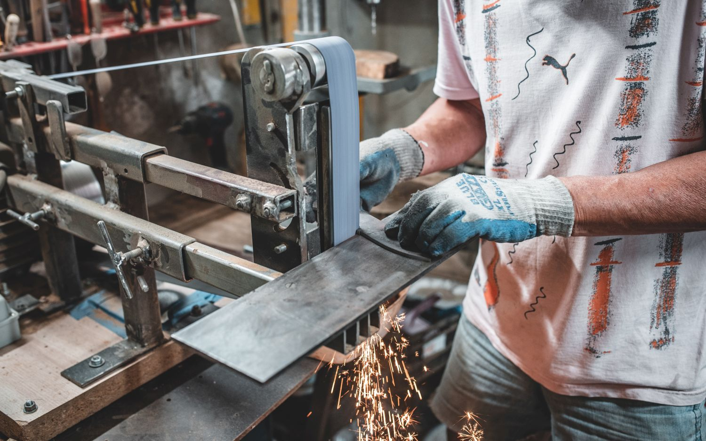
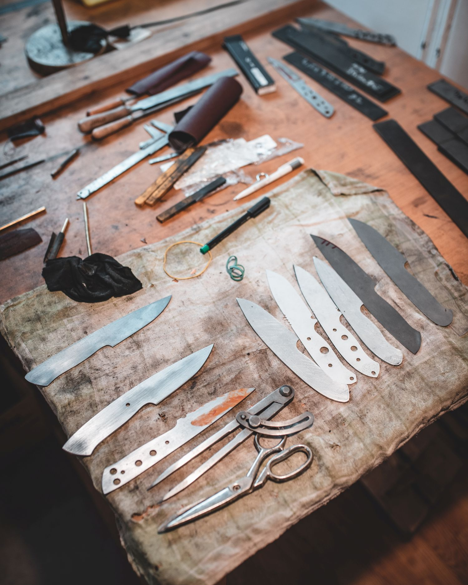
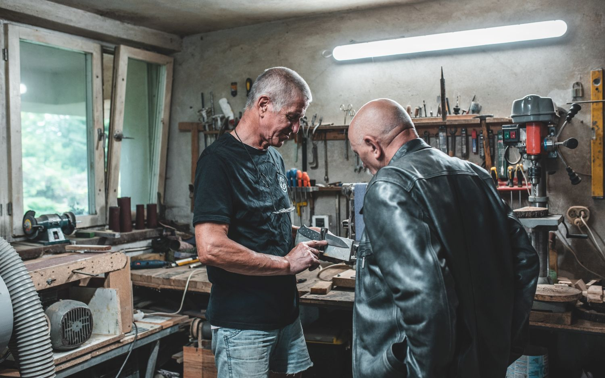
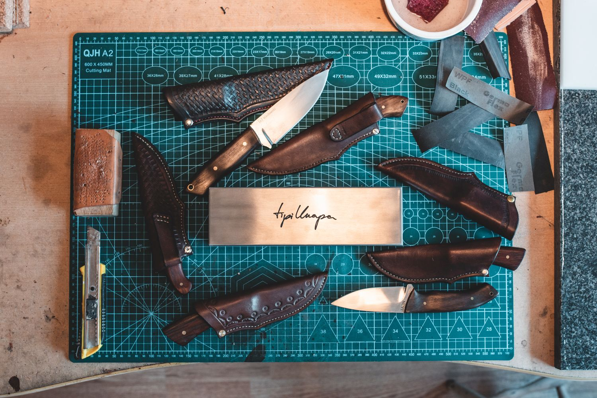

Podczas wojażu po Polsce z moim przyjacielem Łukaszem zatrzymaliśmy się na obiad u jego rodziców. Tak poznałem Rycha. Jakiś czas potem Łukasz zrobił w domu kilka noży z piły tarczowej, które przywiózł na Grochów razem z historią, że Rychu zaskoczony faktem, że da się taki nóż wykonać własnoręcznie (i w domowych warunkach), zaczął sam bawić się w warsztacie. Mniej więcej w tym samym czasie logo TipiKnapa wylądowało na okładce albumu „Knurion"- pierwszym z wielu albumów, do których okładki robiliśmy razem z Łukaszem. Od tamtego czasu planowałem wrzucić na rynek własny produkt. Minęły cztery lata zanim połączyłem te kropki.
Telefon do Łukasza, telefon do Rycha i już byliśmy w drodze na pierwsze spotkanie. Na pokładzie dodatkowo dwóch Bartków - speców od obiektywów i internetów, żeby to wszystko elegancko dokumentować. Gościna u Państwa Wasilewskich tradycyjnie przemiła, warsztat profesjonalny, Rychu rzetelny w wykładaniu nam tajników swojego rzemiosła. Temat dogadany, projekt noża ustalony, termin następnego wypadu również.
Kolejny przyjazd i mamy niespodziankę - wita nas Miro Bojan, autor projektu naszego noża. Słuchamy zatem jego opowieści o pasji do noży, która jest właściwie niesamowitą historią życia Mira. W międzyczasie ustalamy detale techniczne i wszystko co nam się przypomni. Jest z nami również Konrad, kumpel z Kaszub, który w międzyczasie zmajstrował nierdzewne pudełeczka. Wspólnymi siłami dochodzimy do ostatecznej wizji. Bartek zasuwa z aparatem jak poparzony, bo czas nagli.
Tak wygląda, w dużym skrócie, historia tego noża. Cel przyświeca nam następujący - dać ludziom coś, co jest nie tylko trwałe i potrzebne, ale też piękne, wykonane ręcznie z pasją i prezentowane z dumą. Ja ze swojej strony świadczę o tym własnym nazwiskiem i dopisuję dwa słowa, pojęcia nierozłączne, które przychodzą mi na myśl jako pierwsze, kiedy myślę o takim nożu - wolność i odpowiedzialność.
